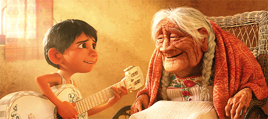
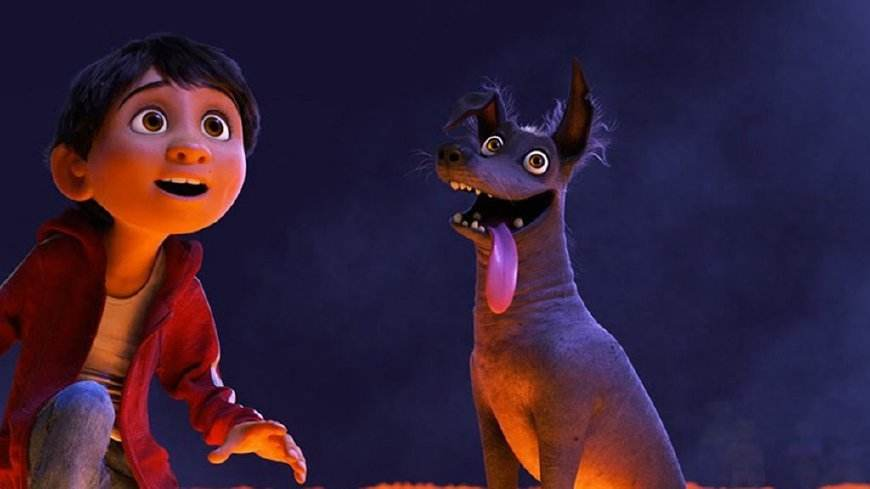
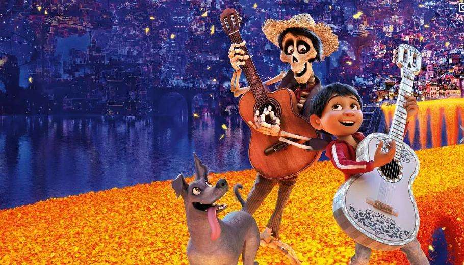
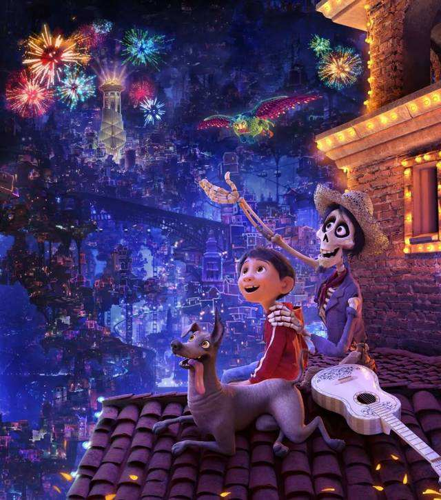

《寻梦环游记》这部动画电影承载了很多温情的元素：家人、梦想、坚持、误会和解等等。
这几天闲来无事，重新又看了一遍《寻梦环游记》，觉得整部片子透露出的更重要的一个价值观，在于人们对于死亡的看法。特别是给孩子们上了一堂生动的“死亡教育课” 。我想父母们，真的可以带着孩子一起看看这部电影，通过电影与孩子谈谈中国人“忌讳”但却很有必要讨论的话题—死亡：死亡让我们肉体分离，但爱和记忆却让我们永生!
关于死亡，孩子通常会问3个问题：
一、人死了都到哪里去了呢？

其实2-7岁的孩子通常不相信人会死，这是因为孩子从2岁开始获得了“物质守恒定律”，相信任何东西都会永远存在，即使看不见了，也会认定它“藏”在某个地方。你告诉他这个东西消失了，他根本不相信。所以，对这个年龄段的孩子，不必如实告诉他们死亡的真相，因为他根本无法理解，不如告诉他到很远的地方去了，上天堂了，化作星星了。
平时我们描述的天堂很抽象，通过《寻梦》，我们能够让孩子切切实实的看到天堂的存在，而亡灵的世界作为影片最华丽璀璨的一幕，也能够看到墨西哥文化中，对于亡灵天堂的重视。我们可以指着影片中，美妙的亡灵世界说，宝宝，人死了都去到那里了，他们一样都很开心，像我们一样，他们还能拥有超能力呢~！

二、他们还好么？我们还能再见到他们么？
2-7岁的孩子虽然无法理解人死了就是消失了，但这个年龄段的孩子，他们所理解的死亡就是亲人的暂时离开。他实际上不是怕死，而是怕分离，怕孤单。所以对于去了天堂的人来说，孩子们会发问，他们过得好么，我们还能相见么？

《寻梦》也给出了很好的解答。亡灵世界中的亡灵们跟我们一样，他们能跟过去的亲人重逢，喜怒哀乐，他们唱歌他们跳舞，有各自的职业，甚至活的更加洒脱与自由。而他们也能通过亡灵桥，一年一次的回到人间世界，看望他们思念的亲人。所以，关于死亡，我们可以告诉孩子们极其珍贵的第二点是，死亡并不能隔绝一切。死亡不是生命的结束，也不意味着与亲人的分离，而是对亲情的一种更深切的拥抱。如果我们在彼此心里，那么死亡就不是分离，他们总会有回家的路。
只要爱永无止息，我们就永远不孤单！

三、面对死亡，除了悲伤，我们能做什么？
当我们面对死亡，面对逝去的亲人时，哭泣与悲伤是绝大多数的反应。那么除了这些，我们还能为逝去的人做些什么呢？《寻梦》中，有一幕让我很震撼，在亡灵世界里，绝大多数亡灵都活的很好，朝气。但有一块地方，却十分寂寥与破败。他们是一群被人间世界遗忘的亡灵，没有人为他们供奉灵牌，而当人间世界中，最后一个记得他们的人也去世后，这个没有被记住的亡灵就会变成一道金光，随风而去。
在墨西哥的死亡文化中，死亡有三层含义：
第一层是停止呼吸的一刻；
第二层是入土为安的一刻；
第三层是被人永远遗忘的时刻，终极的，绝对的死亡。
正是有着如此的文化，墨西哥人会尽情愉悦，大张旗鼓的庆祝亡灵节，他们不哭不闹，用欢声与笑语带给亡灵无尽的思念与呼喊。这样的信念也鼓励着我们，面对死亡，我们不仅仅是悲伤与哭泣，我们仍然可以用我们的方式去爱他们，让他们被祖祖辈辈、世世代代所铭记。
所以如果我们跟孩子面对了真实的死亡时，可以与他们一起来回忆逝者在生时候的趣事，我们也可以一起来想。如果他们在天上，它会希望我们是什么样子？如果他们也有来生，他希望自己的下一辈子应该如何来过？他还会选择我们嘛就是在这样的叙事讨论，讨论叙事，回忆希望等等的过程中来让孩子面对自己的感受，面对死亡。
《寻梦环游记》用极其温情的手法与技术告诉我们：遗忘才是真正的死亡，死去的人活在另外一个世界，他们跟我们一样，欢歌载舞，思念着我们，而我们也可以尽情思念他们，无论是欢笑还是悲伤，只要记得他们就好，而对于存于现世的我们，珍惜身边的人，珍惜与亲人相聚的时光，哪怕是分分秒秒。